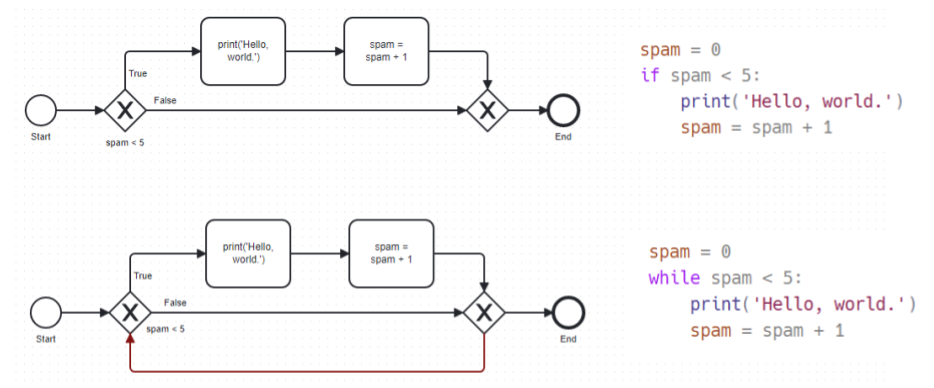
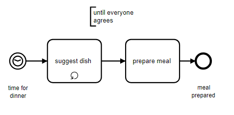
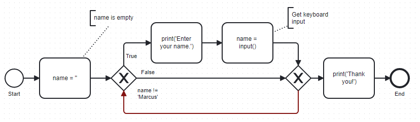
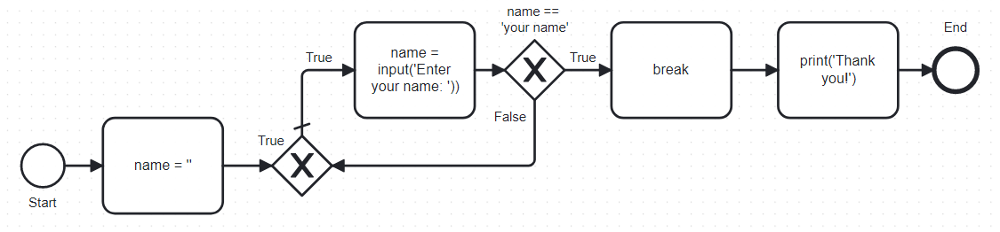
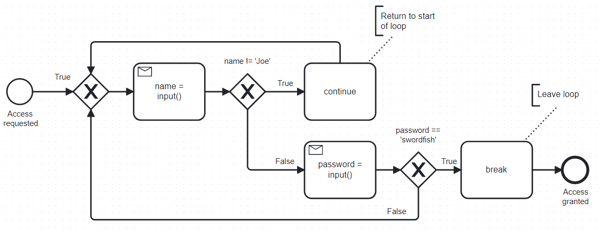
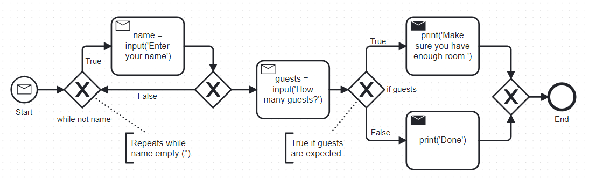
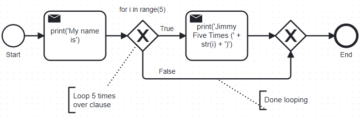

PYTHON LOOPS - WHILE, FOR, BREAK, CONTINUE, RANGE
CSC 109 - Introduction to programming in Python - Fall 2023
Table of Contents
1. Introduction
Figure 1: A Fokker looping (1915-20), Library of Congress@Flickr.com
- Loops are clauses that repeat any number of times.
- Like all clauses, a condition is tested to check if the clause ought to be entered.
But once it's been entered, the condition is tested again after performing some action:
loop [condition]: do something go back to the loop condition
- Python knows two loop types,
whileandfor, and two loop exit strategies,breakandcontinue.
2. While loops
- A
whilestatement always consists of:- The
whilekeyword - A condition (an expression that evaluates to
TrueorFalse) - A colon (
:) - An indented block (
whileclause) on the next line.
- The
- At the end of an
ifstatement, execution continues. At the end of awhilestatement, execution jumps back to test the condition again. Here is an
ifstatement to print 'Hello, world.'spam = 0 if spam < 5: print('Hello, world.') spam = spam + 1Hello, world.
Replacing
ifbywhile: when executed, this prints 'Hello, world.' five times.spam = 0 while spam < 5: print('Hello, world.') spam = spam + 1Hello, world. Hello, world. Hello, world. Hello, world. Hello, world.
Look at the BPMN process diagrams and the code side by side (slide):

Figure 2: if vs. while statement
- In the
whilestatement, the condition is checked at the start of each iteration (that is one loop execution). Production BPMN diagrams with loops do not have any lines running back: instead, the loop tasks are overloaded as shown here. To save time, we're not using a production BPMN tool (like signavio.com) but a simpler, free online tool like bpmn.io.

Figure 3: Loop task in BPMN (camunda.com)
3. Annoying while it lasts
Create a new code block (or a new notebook) in Colab and enter the following code, replacing
'your name'by your actual name:- collapse the print + input lines into one input + prompt line!
name = '' while name != 'your name': print('Please type your name') name = input() print('Thank you!')- Run the file and try to understand what's going on:
- The
namevariable is initialized as the empty string'' - The condition is tested for the first time: it's
True - The clause is entered and you're asked to enter your name
- The
inputfunction assigns what you entered toname - The condition is tested again (and again and again…)
- As soon as you enter your name, with the correct spelling, the
condition becomes
Falseand the program jumps to the last line.
- The
- Go to autbor.com/yourname/ to run the file.
Edit this codeto change'your name'in the code to your own name. Here is the process diagram for this code:

Figure 4: While loop that waits until you enter your name
4. Breaking out of a loop
- Loops are entered when the condition evaluates to
Trueand they are left only if it evaluates toFalse- it's easy to go "infinite". - When execution hits the
breakstatement, it exits the current clause immediately. In nested loops, it exits the innermost loop only. Let's create an infinite loop and
breakit when a condition is met:while True: name = input('Please type your name: ') if name == 'your name': break print('Thank you!')- Go to autbor.com/yourname2/ to run the file.
Edit this codeto change'your name'in the code to your own name. Here is the process diagram for this and the previous loop:

Figure 5: Infinite while loop that must be broken out of
Exercise: what happens if you use
breakoutside of a loop clause? Can you fool Python by indenting thebreak? Write a one-line "Hello, world!" program followed by abreakstatement:print("Hello, world!") breakFor fun, create an infinite loop without break condition that prints "Infinity!" forever until you break the execution with CTRL-D:
while True: print('Infinity')- In Colab, delete the "infinite" output by clicking on the "X".
5. Continuing a loop
- Like
break, thecontinuestatement is only used inside a loop. - When a
continuestatement is reached, the program jumps back to the start of the loop and re-evaluates the loop condition. - Write a program that:
- starts with an infinite
whileloop (alwaysTrue) - asks for
inputof aname. ifthenameis not equal to'Joe'it executescontinue- otherwise, it asks for
inputof thepassword ifthepasswordis'swordfish'it executesbreak.- confirms
'Access granted'when you're done.
- starts with an infinite
Solution:
while True: name = input("Who are you? ") if name != 'Joe': continue password = input("What's the password? ") if password == 'swordfish': break print('Access granted')- Copy the code, open pythontutor.com and paste the program code.
- Run the program inside the pythontutor.com visualization tool.
The BPMN diagram shows the two break points clearly:

Figure 6: Continue and break with an infinite loop
- Solution (pythontutor.com)
6. Non-Boolean truth values
- Recall: to the computer, when used in conditions,
0,0.0and''(empty string) areFalse, while all other values areTrue. What does the following program do?
name = '' while not name: # until you enter a name! name = input('Enter your name: ') guests = input('How many guests will you have? ') if int(guests): # if you have non-zero guests print('Make sure to have enough room') print('Done')- Try it in pythontutor: autbor.com/howmanyguests/
- You could have entered
while not name != ''instead ofwhile not nameand you could have usedif guests != 0instead ofif guests The BPMN diagram:

Figure 7: Non-Boolean truth values
If you enter
''in response to the second question (number ofguests), an error is generated, becauseintcannot convert empty space or whitespace to an integer. To fix this, you must handle it as an exception:name, guests = '','' while not name: name = input('Enter your name: ') guests = input('How many guests will you have? ') if guests == '': guests = 0 print('okay') if int(guests): print('Make sure to have enough room') print('Done')
7. For loops
- The
forstatement allows you to repeat a block of code a certain number of times. - A
forstatement includes:- the
forkeyword - a loop variable
- a call to the
rangefunction with up to 3 integers - a colon
: - An indented clause starting on the next line
- the
Simple example: the program
fiveTimes.pyexecutes the statement in its clause five times whileiis counting up from 0 to 4:print('My name is') for i in range(5): print('Jimmy Five Times (' + str(i) + ')')My name is Jimmy Five Times (0) Jimmy Five Times (1) Jimmy Five Times (2) Jimmy Five Times (3) Jimmy Five Times (4)

Figure 8: For loop with range 5
- Challenge: how would the
printstatement look like with an f-string? Solution:
print('My name is') for i in range(5): print(f'Jimmy Five Times ({i})')forloops are great for counting up and down in regular in- or decrements. This program adds up all numbers from 1 to 100 and stores the result intotal:total = 0 for i in range(101): total = total + i print(total)5050
- This last result relates to a story: when the mathematician Carl Friedrich Gauss was a boy, he found a way to add up all the numbers from 0 to 100. He noticed that there are 50 pairs of numbers that add up to 101: 1 + 100, 2 + 99,…,50 + 51, and 50 * 101 = 5,050.
- Check this program in pythontutor.com.
8. Equivalence of while and for
forloops andwhileloops are fully equivalent but the former are more concise than the latter.- Exercise: rewrite
fiveTimes.pyasfiveTimes2.pywith awhileloop instead of aforloop. Solution:
print('My name is') i = 0 while i < 5: print('Jimmy Five Times (' + str(i) + ')') i = i + 1- Once you're done, run the program at pythontutor.com.
9. Starting, stopping and stepping with range
- The shortest documentation can be had on the IPython shell with the
keyword (variable or function)
? - The
rangefunction ('constructor') e.g. is documented online in the Python standard library:- All parameters must be integers only, keywords are not allowed
- Only the
stopparameter is mandatory:range(5) - The other paramaters:
range(start, stop[, step])with defaultsstart=0andstep=1.
For example,
range(12,16)starts at 12 and stops at 16:for i in range(12,16): print(i)12 13 14 15
Counting up from 2 in steps of 2:
for i in range(2,10,2): print(i)2 4 6 8
You can use a negative number for
stepto make the loop count down:for i in range(5,-1,-1): print(i)5 4 3 2 1 0
What
typeisrange(5)?print(type(range(5))
10. Summary
- Code can be executed repeatedly in a loop while their conditions
evaluate to
Trueusingwhileorfor. - The
rangefunction constructs a sequence of integers. Its parameters arestart,stopandstepvalues, with defaultstart=0,step=1. break,continueandsys.exitcan exit a loop, jump back to the start, or terminate the execution.
11. Glossary
| TERM/COMMAND | MEANING |
|---|---|
while |
Conditional loop |
for |
Conditional loop with counter |
range |
Create sequence of integers |
break |
Exit loop |
continue |
Go to start of loop |
12. References
- Sweigart, A. (2019). Automate the Boring Stuff with Python. NoStarch. URL: automatetheboringstuff.com
- Yunits, B. (2019). Which programming languages use indentation? URL: pldb.com.